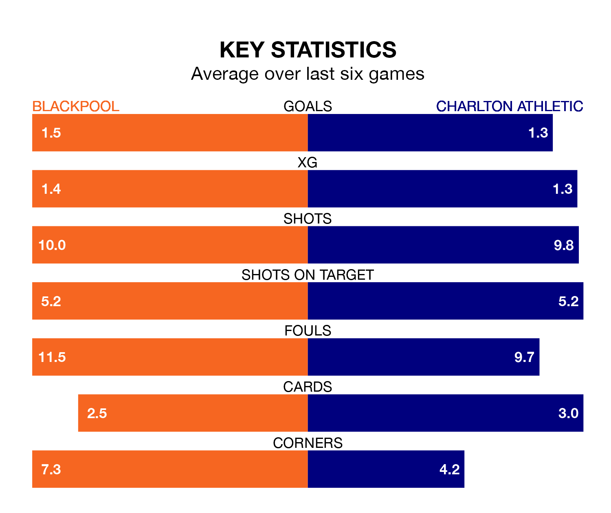

Blackpool are heavy favourites to keep all three points at home in Saturday's kick-off against Charlton Athletic.
The Seasiders, who sit eighth in EFL League One with 28 games played, are priced at 1.6 to seal victory at Bloomfield Road.
Sitting eight places and 15 points behind them in the table, Charlton are 4.0 to win with *Betting Company*, while the draw is at 3.5.
Blackpool are in reasonable form in EFL League One, with four wins and two losses from their last six games.
With no wins and a draw over that period, Charlton's form is much worse – they have taken one point from 18, compared to the Seasiders' 12.
With 46 goals in 28 games so far this season, the hosts are scoring more than average in the league with 1.6 goals per game. And they are conceding fewer than average, letting in 33 goals at a rate of 1.2 per game.
Athletic are also above average scorers, with 1.5 goals per game, compared to a league average of 1.3. They have conceded 1.6 goals per game.
In Alfie May, the Addicks have the league's most on-form striker so far this season. He has notched 16 goals in 25 appearances.
His goal rate of one every 140 minutes is slightly quicker than that of Jordan Rhodes, Blackpool's top scorer with a goal every 137 minutes, and a total of 15 goals in 24 games.
In the last 10 years, Blackpool and Charlton have played each other on 10 occasions. They won three each, and they drew four times.
On average, the Seasiders scored 1.1 goals and the Addicks 1.3 in those matches.
Their last meeting was on October 7, when they played out a 2-2 draw.
Blackpool's last match was on January 20, a 2-1 win against Bristol Rovers, with CJ Hamilton and Karamoko Dembele getting the goals for the Seasiders.
Charlton lost 3-2 against Northampton Town last time out, on Tuesday, with Aaron McGowan (own goal) and Tennai Watson on the scoresheet.
Saturday's match will be refereed by Darren Drysdale, who has taken charge of nine EFL League One games so far this season, issuing one red card and booking 36 players. He has awarded two penalties.
The last Blackpool game Drysdale refereed was a 3-3 away draw with Fleetwood Town on November 1. He is yet to oversee a match featuring Charlton this season.
Updated: 09:07 (UTC), 24/01/24